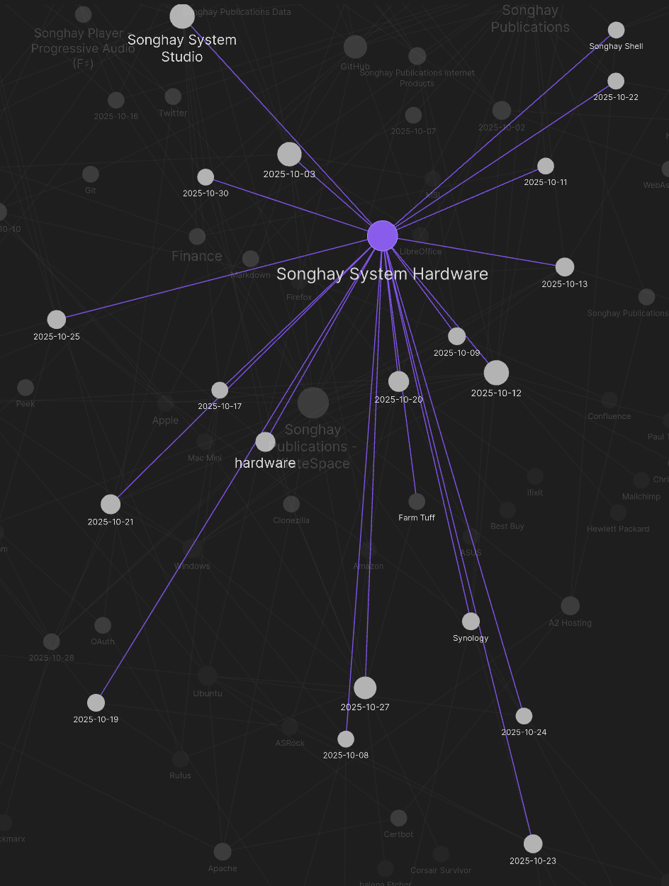
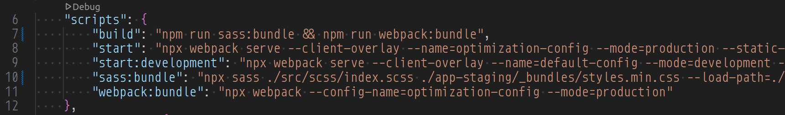
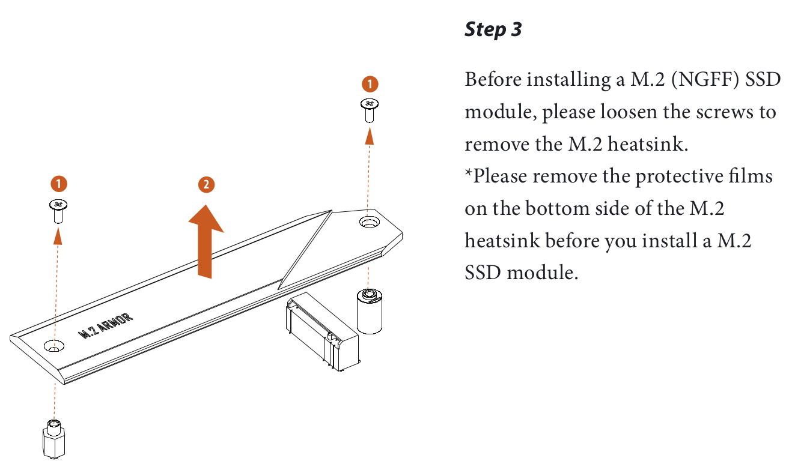
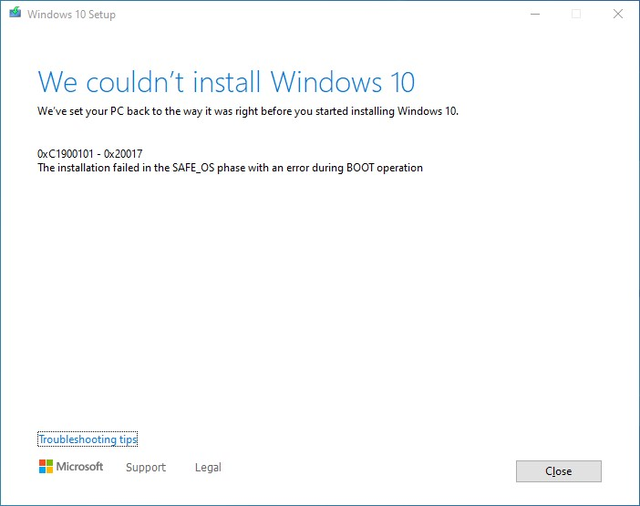

studio status report: 2025-10
I instinctively procrastinated but eventually I had to face it: month 10 of 2025 was about addressing the end of support for Windows 10 in this Studio 😐 I tracked this miserable experience (miserable, largely because I tried too many times to upgrade to Windows 11 on an early TPM-based ASRock motherboard) under the relatively new topic, Songhay System Hardware:

We see that over half of the month was burned up dealing with the needs of Microsoft. Here is executive summary of my response to the death of Windows 10:
- my ‘Farm Tuff’ wagon desktop PC now runs Ubuntu 24.04 on my old MSI motherboard
- my HP Envy 360 laptop was ‘cloned’ with CloneZilla and upgraded in place, according to the preferences of Microsoft
Selected notes of the month follow:
.NET: “Compliance libraries in .NET” #to-do #day-job
.NET provides libraries that offer foundational components and abstractions for implementing compliance features, such as data classification and redaction, in .NET applications. These abstractions help developers create and manage data in a standardized way. In this article, you get an overview on the data classification and redaction compliance libraries.
…
Data redaction helps protect sensitive information in logs, error messages, or other outputs to comply with privacy rules and protect sensitive data. The Microsoft.Extensions.Compliance.Redaction library provides various redactors, such as the ErasingRedactor and HmacRedactor. You can configure these redactors and register them using the
AddRedactionmethods. Additionally, you can create custom redactors and redactor providers to suit your specific needs.
Sass: use @use instead of @import unless you can’t 😐
The
@userule is intended to replace the old@importrule, but it’s intentionally designed to work differently. Here are some major differences between the two:
@useonly makes variables, functions, and mixins available within the scope of the current file. It never adds them to the global scope. This makes it easy to figure out where each name your Sass file references comes from, and means you can use shorter names without any risk of collision.@useonly ever loads each file once. ==This ensures you don’t end up accidentally duplicating your dependencies’ CSS many times over.==@usemust appear at the beginning your file, and cannot be nested in style rules. Nested imports can be migrated to mixin calls ormeta.load-css().- Each
@userule can only have one URL.@userequires quotes around its URL, even when using the indented syntax.
The following cannot be replaced by @use:
@import url('https://fonts.googleapis.com/css?family=Roboto:300,400,500');
The replacement of
@importfor@use/@forwardis specifically so that the Sass version of the import function no longer shares custody with the vanilla CSS version of it.In this instance, you're trying to use the vanilla functionality, so
@import url('https://fonts.googleapis.com/css?family=Montserrat&display=swap')is the correct syntax to use.
Azure Functions: yes, TimerTrigger can be configurable with environment variables 😐👏
[Function("timerFunction")]
public void Run(
[TimerTrigger("%TIMER_SCHEDULE%", RunOnStartup = true)] TimerInfo myTimer,
FunctionContext context
){//…}
The function uses the
%TIMER_SCHEDULE%environment variable to determine the execution schedule, making it configurable without code changes.—“Azure Functions C# Timer Trigger using Azure Developer CLI”
The docs are not clear about this: per the example above, use TIMER_SCHEDULE as the environment variable (the % characters are not to be used in the environment variable name).
The following is also not clear about naming the environment variable because it if focusing on naming for the TimerTrigger:
You can put the schedule expression in an app setting and set this property to the app setting name wrapped in % signs, as
%ScheduleAppSetting%.
Application Insights: “What is OpenTelemetry?”
A brief explanation of what OpenTelemetry is and isn’t.
OpenTelemetry is:
An observability framework and toolkit designed to facilitate the
Export
of telemetry data such as traces, metrics, and logs.
- Open source, as well as vendor- and tool-agnostic, meaning that it can be used with a broad variety of observability backends, including open source tools like Jaeger and Prometheus, as well as commercial offerings. OpenTelemetry is not an observability backend itself.
A major goal of OpenTelemetry is to enable easy instrumentation of your applications and systems, regardless of the programming language, infrastructure, and runtime environments used.
The backend (storage) and the frontend (visualization) of telemetry data are intentionally left to other tools.
Publications: “In Praise of RSS and Controlled Feeds of Information”
The focused, reductive nature of RSS readers means you don’t get the full website experience, but that is arguably for the better in a lot of cases. We already mentioned the lack of suggested articles with engagement bait that could easily draw you in, but another notable omission is the comments section. It is very easy to slip into the comments section at the bottom of an article and spend far too much time reading those. You can still do that in an RSS reader by opening the article in your browser, scrolling down to the comments and diving in. At least in my case, that is a safe amount of friction to prevent me from doing it most of the time. Less is more!
Bulma order of Sass 😐
The documentation shows us these “CSS Library” categories:
- Elements
- Components
- Form
- Columns
- Grid
- Layout
…which are followed by CSS Helpers.
Based on 2025-10-03#Bulma using @forward instead of @use 😐|previous research, the order of @use and @import appears to be:
- Layout (with base styles, typography and themes)
- Elements
- Columns
- Grid
- Components
- Form
- Helpers
Songhay Publications Internet Products: the new, fundamental npm scripts 😐🎏
Fundamentally, we now see two, conventional bundle scripts:
sass:bundlewebpack:bundle
All other scripts are built on top of these two:

Welcome, again, to the publishing business!
Windows 11 and Rufus
This video finally shows me why Rufus is so critical for Windows 11 installation:

Rufus and Windows 11 - 24H2
Songhay System Hardware: Error code: 0xc0000428 stops upgrade cold 😐🧊

In a lost weekend, I have seen this error message countless times:
Songhay System Hardware: this video made me think that the SSD slot next to he graphics card under the heat shield has priority 😐
The ASRock motherboard manual shows the ‘hidden’ slot:

This video talk about the “top slot,” expansion-card SSD slots and thermal pads:

Don't make these mistakes with your NVMe SSD installation - NVMe tips and tricks
Songhay System Hardware: I am beyond tired of this shit 😐💩
Windows 10 refuses to upgrade:

0xC1900101 - 0x20017
The installation failed in the SAFE_OS phase with an error during BOOT operation
0xC1900101 is a frequently observed code which occurs at any stage of the upgrade process; It is also called the generic rollback code, which points to the presence of an incompatible driver. Along with updating the drivers, it is suggested that Windows Setup be run using a minimal set of drivers and startup programs by performing a clean boot before initiating the upgrade process.
—“0xC1900101 – 0x20017, Installation failed in SAFE_OS phase”
Also, see “Windows Vista, Windows 7, Windows Server 2008 R2, Windows 8.1, and Windows 10 setup log file locations.”
Songhay System Hardware: news flash 🗞⚡ NVMe is the replacement for SATA
NVM Express (NVMe) or Non-Volatile Memory Host Controller Interface Specification (NVMHCIS) is an open, logical-device interface specification for accessing a computer's non-volatile storage media usually attached via the PCI Express bus. The initial NVM stands for non-volatile memory, which is often NAND flash memory that comes in several physical form factors, including solid-state drives (SSDs), PCIe add-in cards, and M.2 cards, the successor to mSATA cards. NVM Express, as a logical-device interface, has been designed to capitalize on the low latency and internal parallelism of solid-state storage devices.
These explain why cable management is so awesome in newer computers:
Don't make these mistakes with your NVMe SSD installation - NVMe tips and tricks

SSD vs HDD vs NVMe vs SATA vs mSATA vs M2: Storage Devices EXPLAINED!
open pull requests on GitHub 🐙🐈
- https://github.com/BryanWilhite/Songhay.HelloWorlds.Activities/pull/14
- https://github.com/BryanWilhite/dotnet-core/pull/67
sketching out development projects
Eliminating Angular JS in the Studio is the top priority. Replacing the Angular JS app (http://kintespace.com/player.html) for the kinté space depends on:
- generating a new
index.htmlpage with eleventy - supplementing the index with responsive images
Proposed future items:
- complete upgrade to .NET 8.0
- switch Studio Publications from Material Design to Bulma 💄 ➡️ 💄✨
- start
Songhay.Modules.Bolero.Indexproject - generate responsive and social images with AI